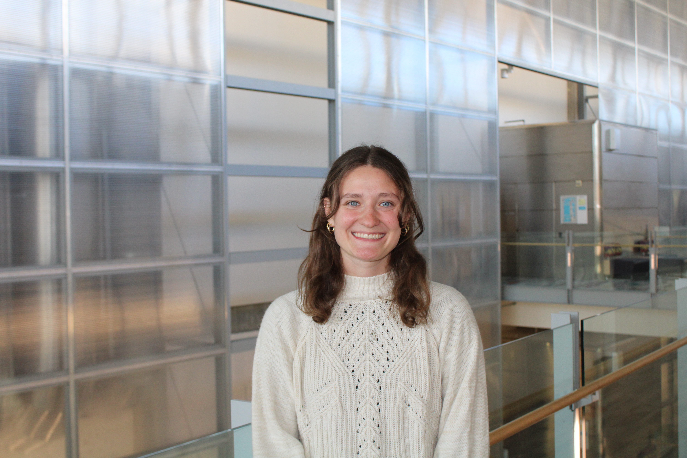

About
A little about me

Bio
Hello! My name is Gianna. Thank you for checking out my website!
I am a recent graduate from UW-Madison. I double majored in Computer Science and Mathematics. I love these two subjects because I love solving puzzles. I think its really fun to work hard at something and watch all the pieces fall into place.
Skills
Education
I graduated from UW-Madison in May 2026. I graduated with a BS in Mathematics and Computer Science. I was a member of Theta Tau where I served as Treasurer for one year. I also was a member of WUD Cuisine Committee and I particiapted in the Directed Reading Program through the math department.
Outside of work
I love to hike, golf, bike, crochet and do anything crafty. I am also a big fan of watching movies.